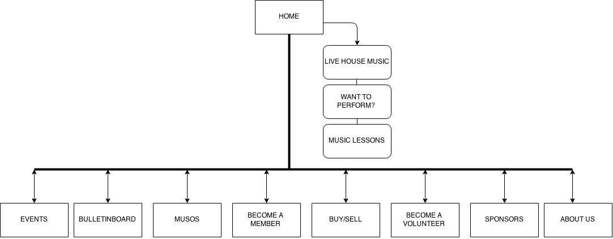

The aim of the website is to attract new members that are interested in the musical industry scene to sign up and be performers. The members should also be influenced to apply volunteer work to help plan events. There should also be enough advertisement to have ticket sales for performances rise and an increase on posts on the billboard page.
To determine whether the website is a success, a database of members is maintained and can indicate how many currently exist. Each profile application is then updated to the database, adding in the details of any new members. Over a timed schedule, this database can be reviewed and analysed as to how many additional members have decided to sign up. These numbers show if the website is applying the correct practices to engage more followers. The increased amount of volunteer work can be measured using metrics that again involve a database where members apply to participate in events. The member’s skills are detailed and create an easier method for allocating tasks.
The client has specified the target audience to be people that are somewhat involved in the music industry. This can include those that may directly play an instrument themselves or are simply interested in musical performances. It was also mentioned that the current audience generally ranges from 40+ and this scope is still acceptable to focus on when deciding on designs. It can also be considered that a large proportion of the audience may include older couples looking to enjoy night out. To strategically design the website to appeal to this audience, navigation must be extremely easy and text must be bold as the older generation may not be accustomed to searching through tabs on a website. The page must also highlight that it is for musical purposes, using musical instrument images and terms that music enthusiasts are more likely to understand. A feedback section could also be incorporated to draw in people to attend performances. To attract members to be performers, and show that anyone that is music savvy can join, the images should also represent the demographic of people that are already involved with the program.
